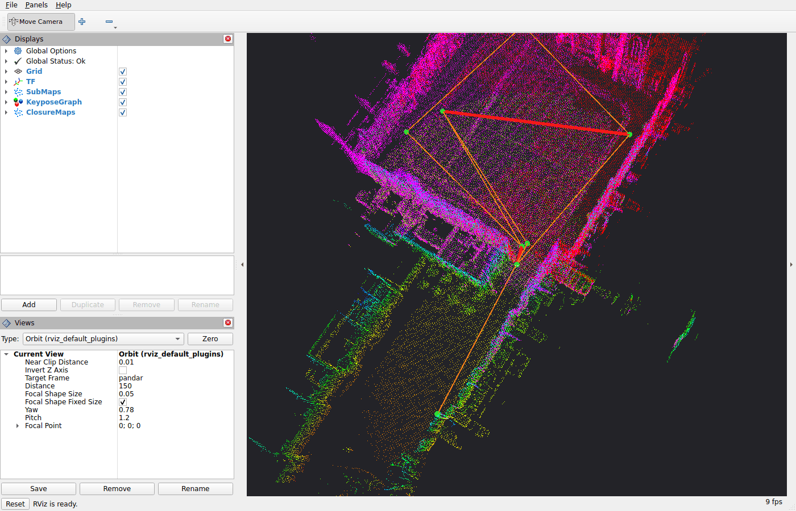

Build and run#
Supported distros: Jazzy, Kilted, Lyrical, Rolling.
Build#
rko_slam depends on rko_lio at build time, and for now both have to be built in the same workspace.
cd <ws>/src
git clone https://github.com/PRBonn/rko_lio
git clone https://github.com/PRBonn/rko_slam
cd <ws> && rosdep install --from-paths src --ignore-src -y
colcon build --packages-select rko_lio rko_slam
Please note, as of right now using rko_lio via sudo apt install ros-<distro>-rko-lio is not supported. Please
clone master into your workspace as shown above. apt installs of both will be supported, same as with rko_lio
today.
Tests are off by default; add -DRKO_SLAM_BUILD_TESTS=ON to the cmake args and run
colcon test --packages-select rko_slam.
Dependencies and quirks#
Three dependencies - g2o, MapClosures and the UTL profiler - are fetched and pinned by CMake, always; nanoflann
and Catch2 are fetched too under -DRKO_SLAM_FETCH_CONTENT_DEPS=ON and found on the system otherwise. Sourcing
Eigen, Sophus, spdlog and tsl-robin-map relies on rko_lio, however you configure that (check rko_lio’s
ROS docs). Everything else resolves via rosdep.
Please note: rko_slam is MIT, but the g2o Cholmod solver links SuiteSparse’s CHOLMOD, whose Ubuntu/Debian build carries GPL-2+ modules.
Steps are planned to clean up the dependency requirements and support pure rosdep installs.
Run#
Two entrypoints: slam.launch.py (mode:=online|offline) and align.launch.py. -s lists every parameter
with its documentation, and anything you leave unset keeps the node’s own default. What each parameter does is
on the Configuration page.
ros2 launch rko_slam slam.launch.py -s
Online#
Next to a running rko_lio, give it rko_lio’s deskewed scan. The base frame is found for you (see below):
ros2 launch rko_slam slam.launch.py lidar_topic:=/rko_lio/deskewed_scan
Add rviz:=true to open RViz with the default view: sub-maps, keypose graph and closures.
The same launch file can spawn the rko_lio front-end for you. rko_lio’s publish_deskewed_scan is forced on and
rko_slam consumes that topic. Give base_frame here, since rko_lio is not running yet when it would be detected:
ros2 launch rko_slam slam.launch.py odometry:=true base_frame:=base_link \
rko_lio_config_file:=my_rko_lio.yaml \
rko_lio_lidar_topic:=/os_cloud_node/points rko_lio_imu_topic:=/os_cloud_node/imu
The odometry#
rko_lio is the default, not a requirement. rko_slam asks two things of the odometry: that its pose is on TF, as described under Frames, and that it is locally consistent, meaning the motion between two nearby scans is right even if the whole trajectory drifts. The loop closing corrects the drift; it does not repair a jump. Any LiDAR odometry qualifies. In my thesis the same back-end ran unchanged on top of Kinematic-ICP, which fuses a LiDAR with wheel odometry on a wheeled robot.
With another odometry the scans are usually raw, so set deskew:=true and rko_slam deskews them itself with
the same TF:
ros2 launch rko_slam slam.launch.py deskew:=true
If the odometry publishes under other names, give lidar_topic, base_frame and odom_frame explicitly.
Offline#
Offline, the node self-drains a bag (every scan is processed faster than frame-rate if possible). The odometry
comes from the bag’s own /tf:
ros2 launch rko_slam slam.launch.py mode:=offline bag_path:=/data/my_bag
If the odometry you want is not in the bag, odom_tum_path takes it from a TUM trajectory file instead, see
Frames:
ros2 launch rko_slam slam.launch.py mode:=offline bag_path:=/data/my_bag odom_tum_path:=/data/odometry_tum.txt
Nothing is written unless you ask for it, see Outputs:
ros2 launch rko_slam slam.launch.py mode:=offline bag_path:=/data/my_bag \
dump_results:=true results_dir:=results run_name:=my_run
Multi-session alignment#
align.launch.py is an offline step: it merges the run directories of several runs of the same place into one
frame. Every run directory must carry its sub-maps, i.e. have been run with dump_results:=true (sub-maps are
dumped by default):
ros2 launch rko_slam align.launch.py run_dirs:="[results/run_1, results/run_2]"
What gets autodetected#
lidar_topic is required and has no default, and base_frame is optional. With autodetect:=true, the
default, the launch file fills in whichever of the two you left unset:
lidar_topicis the onesensor_msgs/PointCloud2topic there is. If several exist, the launch stops and lists them so you can pick. Next to a running rko_lio there are at least two, the raw scan and the deskewed one, so givelidar_topicin that case.base_frameis the first ofbase_link,base_footprint,basefound in the TF tree, otherwise the scan’s ownframe_id. Either way the TF tree must connect it to the scan’s frame, or the launch stops and says so.
Online this means waiting for the topics and TF to show up, autodetect_timeout (10 s) long. Offline it is read
from the bag. Anything you did give is used as is, and with both given nothing is detected at all;
autodetect:=false turns it off. With odometry:=true, lidar_topic is set to rko_lio’s deskewed scan topic
and not searched for, but the base frame detection needs a message on that topic and rko_lio only starts
afterwards, so give base_frame too.
Frames#
rko_slam works in one frame, base_frame: the sub-maps, keyposes and trajectory are expressed in it. Left unset,
it is the scan’s frame, the frame_id of the PointCloud2.
The odometry is the pose of base_frame in odom_frame, read from TF at each scan’s timestamp. A static transform
on TF connects base_frame to the scan’s frame, and rko_slam reads it once, on the first scan, to transform every
scan into base_frame before adding it to the sub-maps.
Offline, odom_tum_path takes the odometry from a TUM file instead of the bag’s /tf. The file holds the pose of
base_frame in odom_frame.
rko_slam publishes map_frame <- odom_frame, which makes map_frame <- base_frame the SLAM estimate.
Topics and transforms#
Subscribed:
Topic / transform |
What |
|---|---|
|
the scans, deskewed unless |
|
the odometry, looked up at each scan’s timestamp |
|
static, read once on the first scan to bring every scan into |
Published:
Topic / transform |
What |
|---|---|
|
the correction; |
|
each closed sub-map, with a |
|
the keyposes with their odometry and closure edges ( |
|
each accepted closure pair as a two-tone cloud ( |
|
offline only, how far into the bag the node is |
Visualization#
Nothing is published for display unless you ask for it. Three publishers, each off by default:
publish_sub_maps:=true, each closed sub-map as a point cloud onrko_slam/sub_maps, with asub_map_<i>TF chain so RViz places them.publish_keypose_graph:=true, the keyposes as spheres with the odometry edges between consecutive keyposes and the closure edges, as markers onrko_slam/keypose_graph.publish_closure_maps:=true, each accepted closure as the two sub-maps it matched, one colour each, onrko_slam/closure_maps, so you can see what got matched to what.
rviz:=true turns all three on and opens RViz with the default view, config/default.rviz, patched with your
frames. With odometry:=true it also shows rko_lio’s local map and deskewed scan. Pass your own config with
rviz_config_file:= and it is used unchanged, with nothing forced on.

Outputs#
Nothing is written unless you ask for it. With dump_results:=true, a SLAM run (slam.launch.py) writes
<results_dir>/<run_name>_<n>/:
File |
What |
|---|---|
|
the trajectory |
|
the keypose pose graph |
|
the config dumped for reproducibility |
|
profiling logs |
|
the trajectory as an image, loop closures in red |
|
the sub-maps, one file each, in the frame of their keypose. Usable as a map for a localization system, and the input to |
align.launch.py always writes <results_dir>/<run_name>_<n>/, and needs the runs it merges to have been
written with dump_results:=true:
File |
What |
|---|---|
|
the joint pose graph over all sessions |
|
each session’s trajectory in the joint frame, |
|
the config dumped for reproducibility, with the run directories |